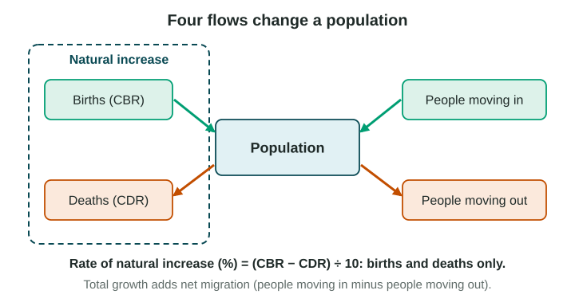

A population changes in only three ways: people are born, people die and people move. This topic gives you the measures geographers use for each, and the forces that push them up or down.
Births and deaths

- The crude birth rate (CBR) is the number of births per 1,000 people in a year.
- The crude death rate (CDR) is the number of deaths per 1,000 people in a year.
"Crude" means the rate counts the whole population, whatever its age structure. A country full of older people can have a high CDR even with good health care.
Natural increase and doubling time
The rate of natural increase (RNI) is the difference between births and deaths, given as a percent:
RNI (%) = (CBR − CDR) ÷ 10
Divide by 10 because the rates are per 1,000 and a percent is per 100. RNI leaves out migration: that is what "natural" means.
Worked example. An invented country has a CBR of 38 and a CDR of 8. RNI = (38 − 8) ÷ 10 = 3 percent. Not 30: that is the rate per 1,000.
Doubling time is how many years a population takes to double at a steady growth rate. Use the rule of 70: doubling time ≈ 70 ÷ RNI (in percent) = 70 ÷ 3 ≈ 23 years. If the RNI is zero or negative, the population never doubles.
To get total growth, add migration: growth per 1,000 = CBR − CDR + net migration rate.
Fertility and replacement
The total fertility rate (TFR) is the average number of children a woman would have in her lifetime if the birth rates of one year stayed the same. In 2024 the world TFR was about 2.2 (UN World Population Prospects 2024). It is high in much of Sub-Saharan Africa and below 2.1 in Europe, East Asia and most of the Americas.
Replacement-level fertility is the TFR at which each generation exactly replaces itself: about 2.1 where few children die. It is a little above 2 because some children die before adulthood and slightly more boys than girls are born. Where many children die, replacement level is higher. A TFR below replacement for many decades means a shrinking population, unless people move in. South Korea’s TFR was 0.72 in 2023 (Statistics Korea, 2024).
Health: infant mortality and life expectancy
- The infant mortality rate (IMR) is the number of babies who die before their first birthday per 1,000 live births. It is one of the best signs of a country’s health care, clean water and food.
- Life expectancy is the average number of years a newborn can expect to live. The world average was about 73 years in 2024 (UN World Population Prospects 2024).
Clean water, sanitation, vaccines and doctors lower IMR and raise life expectancy.
What shapes the rates
| Kind of force | How it works | Example |
|---|---|---|
| Economic | Children can work on farms but cost more in cities | Rural families in many countries have more children than city families |
| Social | Girls who stay in school marry later and have fewer children | Kerala, India: below-replacement fertility (National Family Health Survey, 2019-21) |
| Cultural | Beliefs about family size and the value of sons or daughters | Religious teaching on family size in some communities |
| Political | Governments encourage or limit births, and fund health care | Population policies (Topic 2.7) |
Read the scale
A national rate is an average. India’s TFR is near replacement, but it is far lower in Kerala in the south than in Bihar in the north (National Family Health Survey, 2019-21). Always ask at what scale the data are given and what they hide.